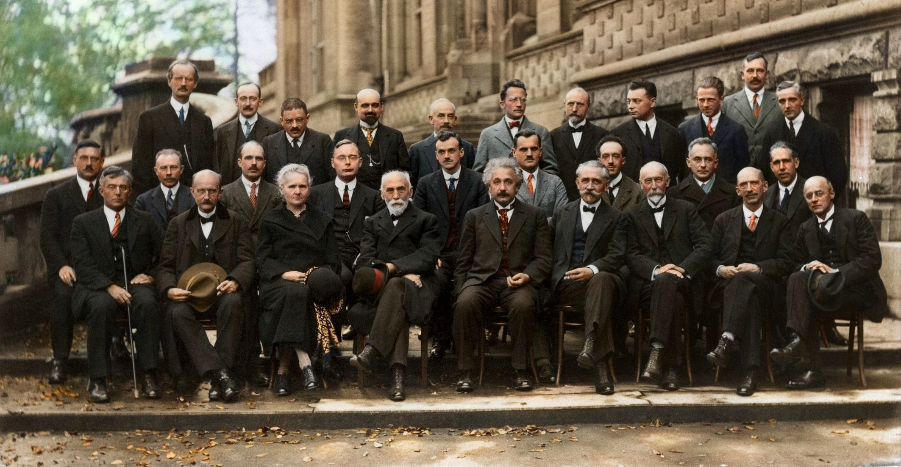

Climate and Air Quality Nexus (CAN) Lab
Air Quality

Climate Change
Human Health
Welcome to our group research website!
We live in the Earth's atmosphere with thousands of hundreds of compounds. They can affect air quality, climate, and human health. For example, it is estimated that outdoor air pollution leads to 3.3 million premature deaths per year worldwide. In addition, these compounds can interact with solar radiation and affect Earth's energy balance.
Among all the compounds, organics are an important class. They are in both gas-phase and particle-phase (also known as aerosol). Due to the chemical complexity, diverse sources, and evolving properties of these organic compounds, their chemistry and the magnitude of their effects on climate are still highly uncertain. My research aims to comprehensively understand the sources, chemistry, and properties of atmospheric organic compounds, as well as adequately quantify their impacts on climate and human health.
Specific research interests include:
- Measurements of emissions from both natural and anthropogenic sources
- Fundamental studies on the oxidation mechanisms of atmospheric organic compounds
- Chemical characterization and source apportionment of ambient organic aerosol
- The impacts of atmospheric organic compounds on human health and climate
To address these challenging questions, my research involves laboratory studies, field measurements, model simulations, and instrument development.